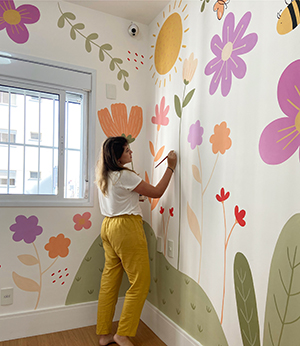
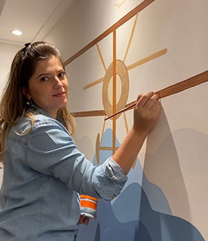
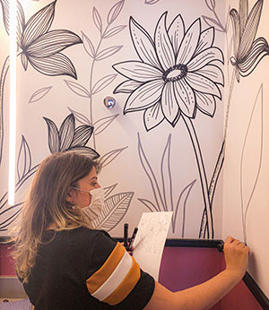

Hey, my name is Tallyta Soares Triolo, I am 31 years old, I am marriage and I have one daughter. I am from São Paulo city, Brazil. The city of São Paulo, also called Sampa, has more than 20 million inhabitants and is one of the largest cities in the world and the largest in the southern hemisphere. I was born and grown in the São Paulo. I have graduated in Business Administration and have a postgraduate degree in Marketing and Commercial Relations. I am also a self-taught illustrator and graphic designer.
Art painting on walls has become my favorite hobby and my main job in Brazil. After some time working in the marketing field, I discovered a new passion through illustrations. I create illustrations and do artistic paintings on walls, usually for children's rooms. I love to spend time painting. If you want, you can visit my Instagram page to see all my jobs: Instagram: @TallySoares.Art
  I like to get together with friends on the weekend to practice some sport outdoors, in a park. Volleyball, tennis, beach tennis are my favorites.